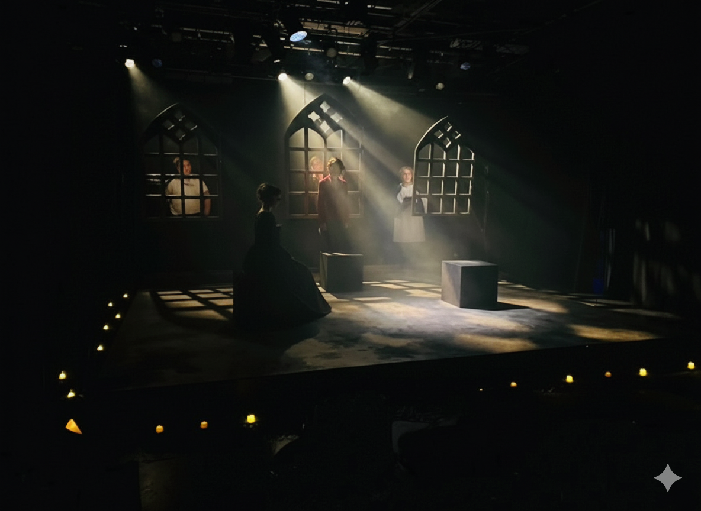
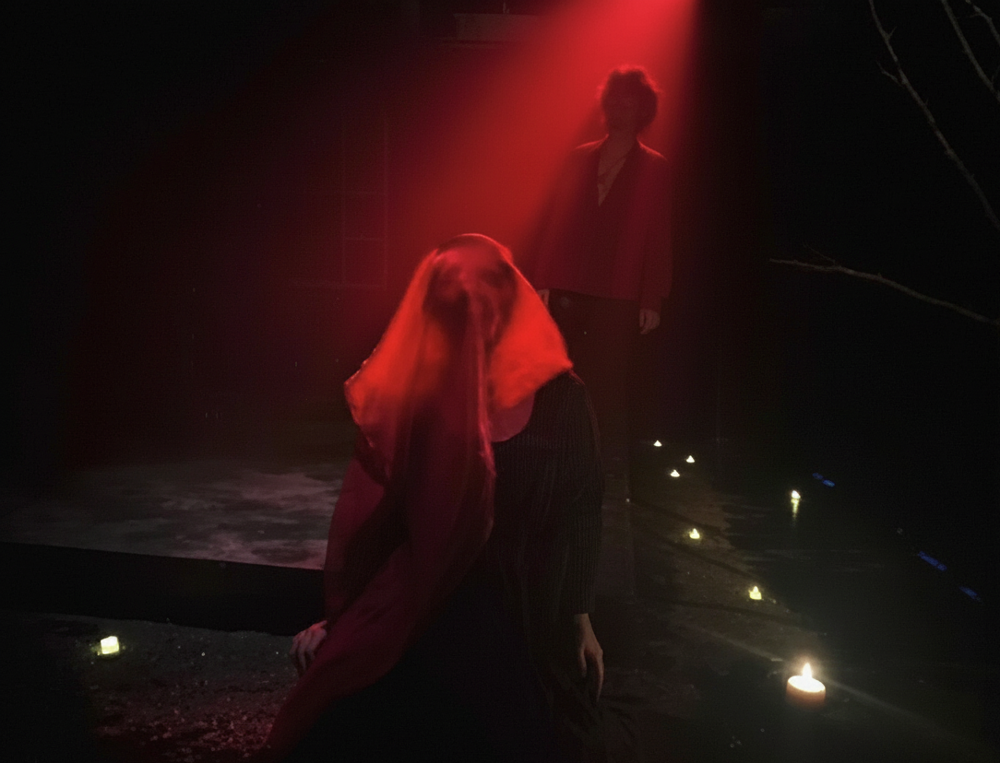
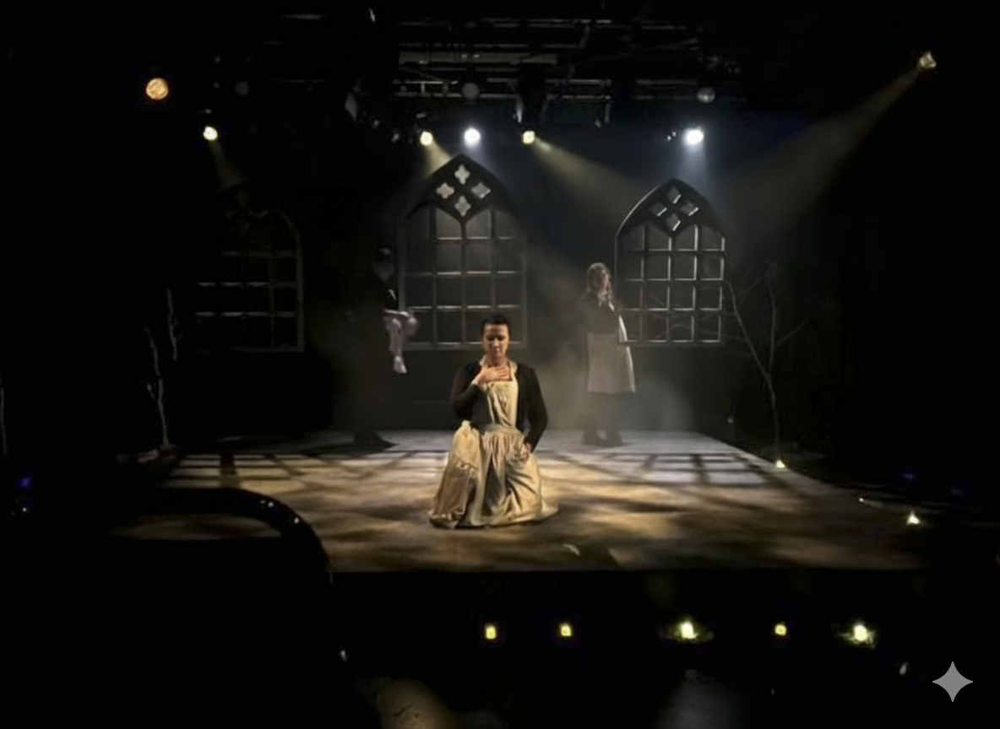

"Women, Beware The Devil" (May 2025) | design | rigging
Women, Beware The Devil explores 17th-century Puritanical fearmongering around witchcraft. The piece stays in one house, with fast-paced naturalistic transitions powering the narrative. With the exception of one scene - the séance with the Devil - I selected a simple and largely tungsten palette. As the story took its course I steepened backlight angles and favoured more saturated warm colours to create an emotional context for the protagonists's inevitable and tragic conclusion.


